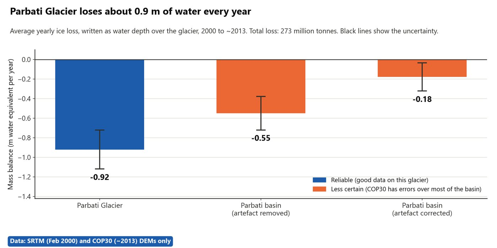
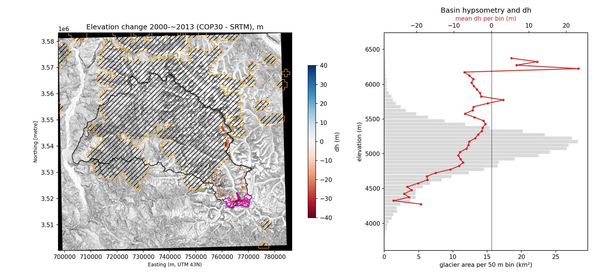

About
From a mountain village to the cryosphere
I grew up in a remote village in Uttarakhand, where drying springs and shrinking winter snowfall were part of everyday talk. That is where my interest in the cryosphere (the frozen parts of Earth: snow, glaciers, permafrost) began.
Today I combine field knowledge, remote sensing and hydrological modelling to understand how Himalayan water supply and hazards are changing.
Academic path
- BTechCivil Engineering
- MTechWater Resources Engineering
- PhDCoEDMM, IIT Roorkee (ongoing)
Research interests
What I work on
Snow, ice and extreme rain in the Northwest Himalaya, and what they mean for rivers and the people who live along them.
Himalayan mountain hydrologyHow high-mountain basins store and release water through the seasons.
Snow and glacier meltCryosphere-hydrology interactions and their share of river flow.
Hydrological modellingSPHY, a spatially distributed model for snow, glacier and rain-fed basins.
Extreme rainfall and hazardsHydro-climatic hazards and extreme rainfall in the Northwest Himalaya.
CMIP6 climate projectionsHow future climate scenarios change snow cover and melt.
Skills
Skills and tools
SPHYPythonPCRasterGoogle Earth EngineQGIS / ArcGISCMIP6Remote sensingModel calibration
Research highlight
Parbati Glacier is thinning
A geodetic mass-balance study of the Parbati basin, Himachal Pradesh, comparing two radar elevation models (SRTM, February 2000, and Copernicus GLO-30, about 2013).
−0.92
m water equivalent per year, Parbati Glacier (±0.20)
0.27 Gt
ice mass lost from the glacier over about 13 years
282
glaciers mapped across the 1,722 km² basin


Publications
Papers and presentations
2026
First-author paper First authorPhysics and Chemistry of the Earth · add full title and DOI
2025
Co-authored paperScience of the Total Environment · add full title and DOI
2025
Co-authored paperPhysical Geography · add full title and DOI
2024
Co-authored paperGeomatics, Natural Hazards and Risk · add full title and DOI
2022
Poster ConferenceCryosphere and Related Hazards in High Mountain Asia, Almaty, Kazakhstan
Experience
Where I've worked
Now
PhD Scholar, CoEDMM, IIT RoorkeeHimalayan hydrology, cryosphere and extreme rainfall
JRF
Junior Research Fellow, IIRS-ISRO, DehradunSnow cover and glacier melt studies across the Northwest Himalaya
JRF
Junior Research Fellow, GBPNIHESDWater-sustainability mapping in the eastern Kumaon Himalaya